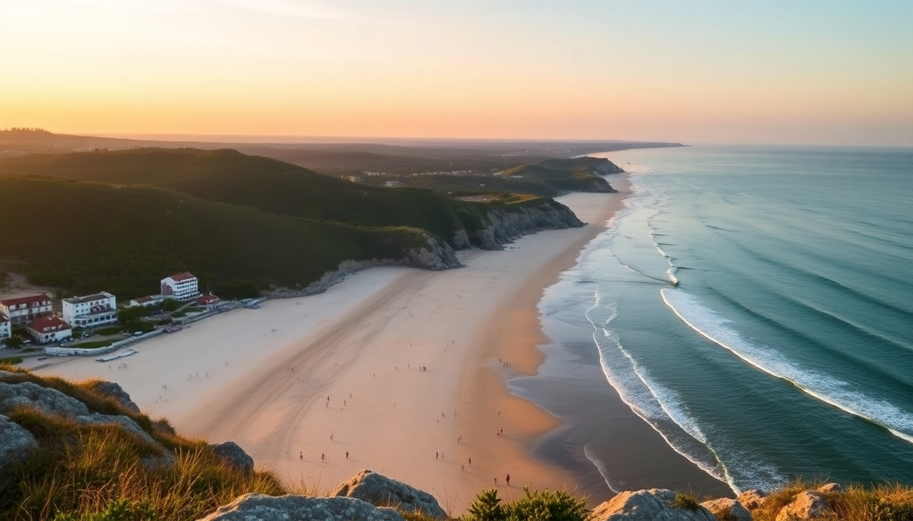

Germany’s Best Beaches: Rügen, Usedom, and Sylt

I spent three weeks last summer bouncing between Germany’s three big beach islands — Rügen, Usedom, and Sylt — to see which stretches of sand actually deliver. The short answer: all three do, but for very different travelers. Here’s what I found, where I’d go back, and what I’d skip.
Which German beach island is right for you?
Each island has a distinct personality. Rügen is the family-friendly all-rounder with chalk cliffs and long sandy strands. Usedom is quieter, cheaper, and flatter — think bike rides and sunsets over the Polish border. Sylt is the premium pick: pricier, windier, and packed with seafood spots and designer beach chairs.
I’d send first-timers to Rügen. Repeat visitors who want peace go to Usedom. If your budget stretches and you want a bit of glamour with your dunes, Sylt wins.
What are the best beaches on Rügen?
Rügen’s coastline is huge, so pick your spot carefully. The Binz promenade gets the crowds and the ice-cream stalls — fine for a day, but I found it too busy. Walk 20 minutes north to Prora instead. Same sand, half the people, and you get the eerie Nazi-era “Colossus of Prora” resort ruins as a backdrop.
Sassnitz is worth a stop for the Königsstuhl chalk cliffs, but the beach itself is pebbly and narrow. Better to take the boat from Sassnitz to Kreidefelsen and swim off the small sandy coves below the cliffs — just check the tide times.
Schaabe sandbar connects the main island to the Jasmund peninsula. It’s a 10-kilometer strip of fine sand with shallow water. I rented a bike in Sassnitz and rode the whole thing one morning. No shade, so bring an umbrella.
- Binz: best for amenities, worst for crowds
- Prora: quieter alternative to Binz, historic ruins nearby
- Schaabe: long, shallow, perfect for cycling and swimming
- Königsstuhl area: scenic cliffs, small coves accessible by boat
Where should I go on Usedom to avoid crowds?
Usedom feels like a secret that Germans have kept to themselves. The three main resort towns — Heringsdorf, Ahlbeck, and Bansin — share a single 12-kilometer beach that’s wide enough to never feel packed. I stayed in Heringsdorf at the Hotel Esplanade, which is right on the promenade. The breakfast buffet was solid, and the beach chairs (Strandkörbe) are available for rent by the hour.
For the least crowded stretch, walk east from Ahlbeck toward the Polish border. The pier at Ahlbeck is the oldest in Germany — wooden, photogenic, and less touristy than the one in Heringsdorf. I ate lunch at Café 7 on the pier; the fish sandwiches were good, the coffee average.
If you want a real escape, go to the Usedom Nature Park on the western end. Mudflats, dunes, and almost nobody. I saw more cranes than people there.
- Heringsdorf: liveliest of the three, good restaurants
- Ahlbeck: historic pier, quieter beach sections
- Bansin: smallest resort, lake-side option
- Usedom Nature Park: wild beach, birdwatching, zero infrastructure
Is Sylt worth the hype and the price?
Yes, but only if you know what you’re paying for. Sylt is expensive — a single Strandkorb rental can cost €15 a day, and a coffee in Westerland runs around €5. The water is colder than Rügen or Usedom because of stronger currents. What you get in return is consistent wind (great for kite surfers) and some of the best seafood I’ve had in Germany.
I ate at Gosch in Westerland twice — the Matjes sandwich is legendary for a reason. For a splurge dinner, Sylt-Stübchen in Kampen served a North Sea bouillabaisse that I still think about.
Westerland’s main beach is fine but packed. Skip it and go to Kampen (the “millionaire’s village”) where the beach is wider and the crowd is older and richer. The Rotes Kliff cliffs near Wenningstedt are worth the walk — red sandstone against blue water, no entry fee.
- Westerland main beach: easy access, crowded, good for people-watching
- Kampen beach: wider, quieter, more expensive Strandkörbe
- Rotes Kliff: free cliff walk, great photo spot
- List: northern tip, seal-watching boat tours, less crowded
When is the best time to visit German beaches?
July and August are peak season — water temperatures hit 18–20°C (warm for the Baltic), but beaches are packed and prices spike. I went in early June and late September. June was better: warm enough to swim, fewer people, and the Störtebeker Festival in Rügen was just starting. September was cooler (around 15°C water) but the light was beautiful, and I had entire stretches of beach to myself.
If you’re going to Sylt, avoid August. The wind picks up less in June, and the oyster season hasn’t started yet — but you’ll still get good seafood.
How do I get between these islands without a car?
You can do all three by train and ferry. From Berlin, take the RE3 to Stralsund, then the train over the Rügen bridge. For Usedom, the train goes directly to Heringsdorf from Berlin in about three hours. Sylt is accessible via the Sylt Shuttle from Niebüll — your train goes onto a ferry, which is a fun novelty.
I rented a bike on each island. Rügen has the best cycling infrastructure (the Binz–Sassnitz bike path is paved and mostly flat). Usedom’s network is also good. Sylt is smaller, so biking across the whole island takes only two hours.
FAQ
Do I need to book beach chairs in advance on Sylt? Yes, especially in Kampen and Westerland during July and August. You can reserve Strandkörbe online through the local tourist offices. Walk-up rentals exist but often sell out by 10 a.m.
Can I swim in the Baltic Sea in October? Technically yes, but water temps drop to 12–14°C. I did it once on Usedom in late September and regretted it after five minutes. Stick to June through early September for comfortable swimming.
Are dogs allowed on German beaches? Most beaches have designated dog sections. On Rügen, the Prora beach has a fenced dog area. Sylt’s Kampen beach bans dogs entirely during peak season. Check local signs — fines for walking dogs on the wrong section can be €50.
Conclusion
- Rügen is the best all-around pick: variety of beaches, chalk cliffs, and solid cycling routes. Stay in Prora instead of Binz.
- Usedom is the budget-friendly quiet option. Bike between Heringsdorf and Ahlbeck, eat at Café 7, then walk into the nature park.
- Sylt delivers on seafood and scenery but costs double. Book Strandkörbe ahead, skip Westerland’s main beach, and eat at Gosch.
- Visit in June for good swimming without the peak-season crowds.
- Rent a bike on each island — it’s the best way to see the coast.